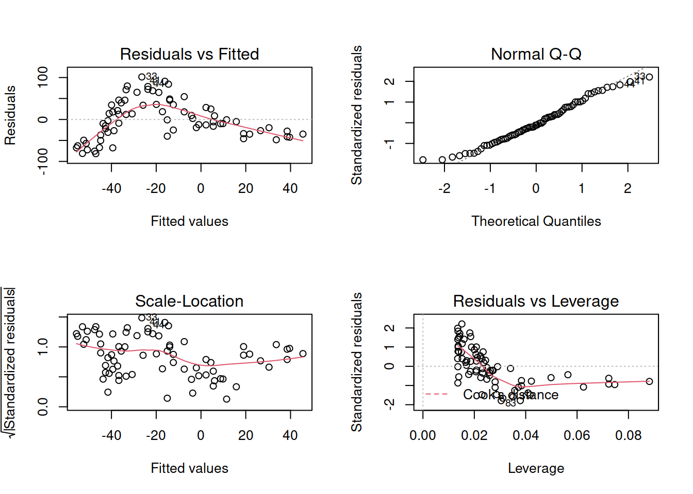
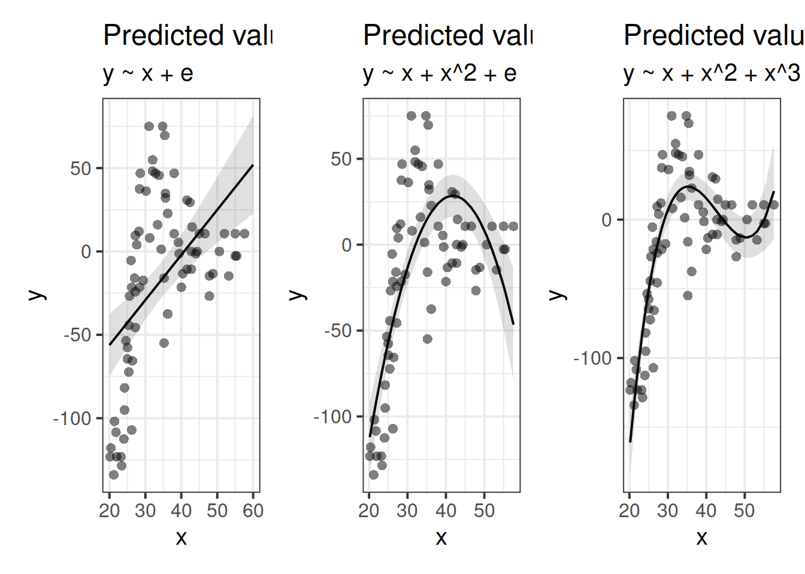
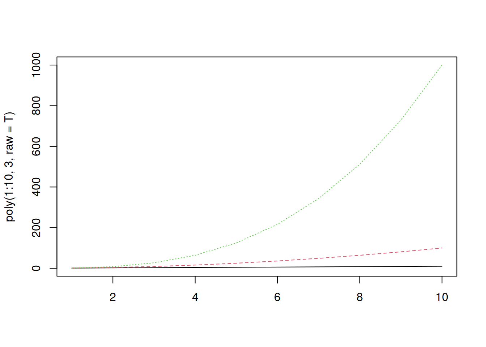
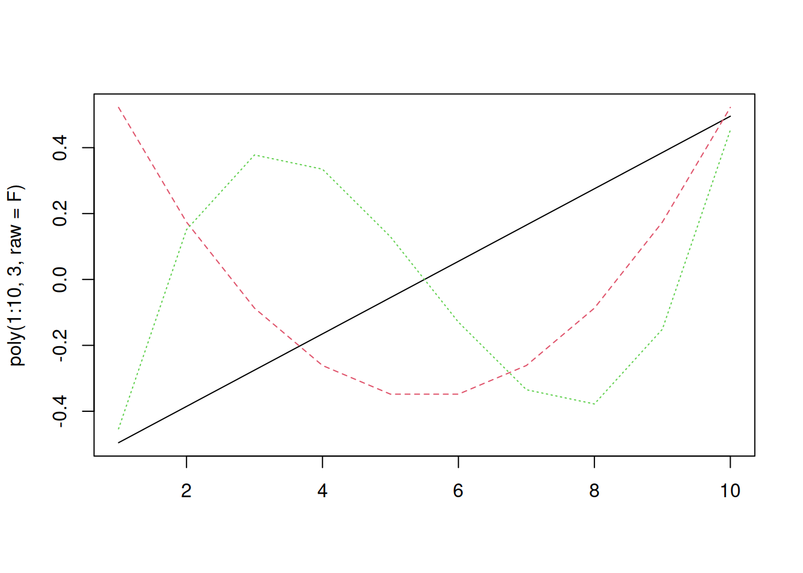

Longitudinal (non-linear)
Preliminaries
- Open Rstudio, and create a new RMarkdown document (giving it a title for this week).
Background & Reading
Linear vs Non-Linear
We have already seen in the last couple of weeks that we can use MLM to study something ‘over the course of X.’ For instance in Week 1’s weight change data, which was measured over the course of several assessments (Figure 1), and in the novel word learning experiment from Week 2 our analysis was interested in change over the course of the experimental blocks.
](images/gca/weightchangelin.png)
Figure 1: Weight Maintain Model fitted values, from Week 1 exercises
Longitudinal data is the term commonly used to refer to any data in which repeated measurements are taken over a continuous domain. This opens up the potential for observations to be unevenly spaced, or missing at certain points, as well as the fact that many effects of interest are likely to display non-linear patterns. These exercises focus on including higher-order polynomials in MLM to capture non-linearity.
Motivation
Suppose we had collected the data in Figure 2, and we wanted to fit a model to predict \(y\) based on the values of \(x\).Figure 2: A clearly non-linear pattern
A model? Easy, peasy, lemon squeezy! Let’s use our old friend linear regression. Expand the box below to see the model estimates and plot of model fit.
Job done? Clearly not - we need only overlay model upon raw data (Figure 3) to see we are missing some key parts of the pattern.
Figure 3: Uh-oh…
Thoughts about Model + Error
All our work here is in aim of making models of the world.
- Models are just models. They are simplifications, and so they don’t perfectly fit to the observed world (indeed, how well a model fits to the world is often our metric for comparing models).
- \(y - \hat y\). Our observed data minus our model predicted values (i.e. in linear regression our “residuals”) reflect everything that we don’t account for in our model
- In an ideal world, our model accounts for all the systematic relationships, and what is left over (our residuals) is just randomness. If our model is mis-specified, or misses out something systematic, then our residuals will reflect this.
- We check for this by examining how much like randomness the residuals appear to be (zero mean, normally distributed, constant variance, i.i.d (“independent and identically distributed”) - i.e., what gets referred to as the “assumptions”).
- We will never know whether our residuals contain only randomness, because we can never observe everything.
Let’s just do a quick plot(model) for some diagnostic plots of my linear model:

Does it look like the residuals are independently distributed? Not really. We need to find some way of incorporating the non-linear relationship between y and x into our model.
What’s a polynomial?
Polynomials are mathematical expressions which involve a sum of powers. For instance:
\(y = x^2 + 4\)
\(y = 4x^3 + 2x^2 + 9x\)
\(y = x^6\)
For our purposes, extending our model to include higher-order terms can fit non-linear relationships between two variables, for instance, fitting models with linear and quadratic terms (\(\color{red}{y_i} = \color{blue}{\beta_0 + \beta_1 x_{i} \ + \beta_2 x^2_i} + \varepsilon_i\)) and extending these to cubic (\(\color{red}{y_i} = \color{blue}{\beta_0 + \beta_1 x_{i} \ + \beta_2 x^2_i + \beta_3 x^3_i} + \varepsilon_i\)) and beyond.

Raw/Natural Polynomials
There are two types of polynomial we can construct. “Raw” (or “Natural”) polynomials are the straightforward ones you might be expecting the table to the right to be filled with.
These are simply the original values of the x variable to the power of 2, 3 and so on.
We can quickly get these in R using the poly() function, with raw = TRUE.
| x | x^2 | x^3 |
|---|---|---|
| 1 | ? | ? |
| 2 | ? | ? |
| 3 | ? | ? |
| 4 | ? | ? |
| 5 | ? | ? |
| … | … | … |
poly(1:10, degree = 3, raw=TRUE)## 1 2 3
## [1,] 1 1 1
## [2,] 2 4 8
## [3,] 3 9 27
## [4,] 4 16 64
## [5,] 5 25 125
## [6,] 6 36 216
## [7,] 7 49 343
## [8,] 8 64 512
## [9,] 9 81 729
## [10,] 10 100 1000
## attr(,"degree")
## [1] 1 2 3
## attr(,"class")
## [1] "poly" "matrix"We can actually use poly() internally in fitting our linear model, if we want:
lm(y ~ poly(x, 3, raw = T), data = df)But note that the coefficients get named poly(x, 3, raw = T)[1], poly(x, 3, raw = T)[2] etc.
We can alternatively use Dan’s code, which attaches these as columns to our data, named poly1, poly2, etc.
Both will produce the same model output (but Dan’s method produces these nice neat names for the coefficients!):
##
## Call:
## lm(formula = y ~ poly1 + poly2 + poly3, data = df)
##
## Residuals:
## Min 1Q Median 3Q Max
## -78.749 -16.352 -1.201 20.744 61.827
##
## Coefficients:
## Estimate Std. Error t value Pr(>|t|)
## (Intercept) -1.528e+03 1.774e+02 -8.612 1.36e-12 ***
## poly1 1.147e+02 1.512e+01 7.588 1.05e-10 ***
## poly2 -2.764e+00 4.111e-01 -6.724 3.97e-09 ***
## poly3 2.151e-02 3.578e-03 6.013 7.43e-08 ***
## ---
## Signif. codes: 0 '***' 0.001 '**' 0.01 '*' 0.05 '.' 0.1 ' ' 1
##
## Residual standard error: 29.02 on 70 degrees of freedom
## Multiple R-squared: 0.7146, Adjusted R-squared: 0.7024
## F-statistic: 58.44 on 3 and 70 DF, p-value: < 2.2e-16With raw/natural polynomials, the terms poly1, poly2 and poly3 are correlated.
Think think about why this might be - by definition, as \(x^1\) increases, so will \(x^2\), and so will \(x^4\) and so on.
We can visualise them:
matplot(poly(1:10, 3, raw=T), type="l")
And measure the correlation coefficients
cor(poly(1:10, 3, raw=T)) %>% round(2)## 1 2 3
## 1 1.00 0.97 0.93
## 2 0.97 1.00 0.99
## 3 0.93 0.99 1.00Why might this be a problem?
Well, this multicollinearity can lead to estimation problems, and means that our parameter estimates may change considerably depending upon what terms we include in our model, and it becomes more difficult to determine which ones are important, and what the effect sizes are.
The table below shows the coefficients for models fitted to a randomly generated dataset, with poly1, poly1+poly2, and poly1+poly2+poly3 as predictors (where poly1-poly3 are natural polynomials). Notice that they change with the addition of each term.
| term | y~poly1 | y~poly1+poly2 | y~poly1+poly2+poly3 |
|---|---|---|---|
| (Intercept) | 189.61 | -58.78 | 1.64 |
| poly1 | 27.98 | 152.17 | 98.58 |
| poly2 | - | -11.29 | 0.33 |
| poly3 | - | - | -0.7 |
Orthogonal Polynomials
“Orthogonal” polynomials are uncorrelated (hence the name). We can get these for \(x = 1,2,...,9,10\) using the following code:
poly(1:10, 3, raw = FALSE)## 1 2 3
## [1,] -0.49543369 0.52223297 -0.4534252
## [2,] -0.38533732 0.17407766 0.1511417
## [3,] -0.27524094 -0.08703883 0.3778543
## [4,] -0.16514456 -0.26111648 0.3346710
## [5,] -0.05504819 -0.34815531 0.1295501
## [6,] 0.05504819 -0.34815531 -0.1295501
## [7,] 0.16514456 -0.26111648 -0.3346710
## [8,] 0.27524094 -0.08703883 -0.3778543
## [9,] 0.38533732 0.17407766 -0.1511417
## [10,] 0.49543369 0.52223297 0.4534252
## attr(,"coefs")
## attr(,"coefs")$alpha
## [1] 5.5 5.5 5.5
##
## attr(,"coefs")$norm2
## [1] 1.0 10.0 82.5 528.0 3088.8
##
## attr(,"degree")
## [1] 1 2 3
## attr(,"class")
## [1] "poly" "matrix"Notice that the first order term has been scaled, so instead of the values 1 to 10, we have values ranging from -0.5 to +0.5, centered on 0.
Think about what this means for \(x^2\).
It will be uncorrelated with \(x\) (because \(-0.5^2 = 0.5^2\))!
matplot(poly(1:10, 3, raw=F), type="l") The correlations are zero!
cor(poly(1:10, 3, raw=F)) %>% round(2)## 1 2 3
## 1 1 0 0
## 2 0 1 0
## 3 0 0 1With some minor edits to Dan’s code (orthogonal = TRUE):
df <- code_poly(df = df, predictor = 'x', poly.order = 3, orthogonal = TRUE, draw.poly = FALSE)We can then fit the same models y~poly1, y~poly1+poly2, and y~poly1+poly2+poly3 as predictors (where poly1-poly3 are now orthogonal polynomials), and see that estimated coefficients do not change between models:
| term | y~poly1 | y~poly1+poly2 | y~poly1+poly2+poly3 |
|---|---|---|---|
| (Intercept) | 343.49 | 343.49 | 343.5 |
| poly1 | 254.12 | 254.12 | 254.1 |
| poly2 | - | -259.44 | -259.4 |
| poly3 | - | - | -39.14 |
Remember what zero is!
With orthogonal polynomials, you need to be careful about interpreting coefficients. For raw polynomials the intercept remains the y-intercept (i.e., where the line hits the y-axis). The higher order terms can then be thought of from that starting point - e.g., “where \(x\) is 2, \(\hat y\) is \(\beta_0 + \beta_1 \cdot 2 + \beta_2 \cdot 2^2 + \beta_3 \cdot 2^3 ...\)”
For orthogonal polynomials, the interpretation becomes more tricky. The intercept is the overall average of y, the linear predictor is the linear change pivoting around the mean of \(x\) (rather than \(x = 0\)), the quadratic term corresponds to the steepness of the quadratic curvature (“how curvy is it?”), the cubic term to the steepness at the inflection points (“how wiggly is it?”), and so on.
Quadratic curves
Figure 4: Positive and negative quadratic terms
Exercises: Cognitive performance
There are lots of different ways to organise your file system/your life in R.
You might be creating a new project each week, or a new folder, or just a new .Rmd.
There’s no best way to organise this - it is personal preference. However, one thing which appears to be common across most approaches is that having a lot of irrelevant stuff in your environment (top right pane) can get confusing and messy.
We encourage you now to clear your environment for this week, and then load in the data.
If you are worried that you are going to lose some of the objects in your environment, then this may be a sign that you are not using R to its full potential. The idea is that we can recreate all of our analyses by just running the relevant script!
Alongside lme4 and tidyverse and possibly broom.mixed, we’re going to be using some of Dan’s useful functions for getting p-values and coding polynomials. Load these now.
The secret source()
The source() function basically takes in R code and evaluates it. You can download R scripts with Dan’s code here and here.
But you can also source them directly from the URLs, which runs the R code and creates the functions in your environment:
library(tidyverse)
library(lme4)
library(broom.mixed)
source('https://uoepsy.github.io/msmr/functions/get_pvalues.R')
source("https://uoepsy.github.io/msmr/functions/code_poly.R")
No modelling just yet.
Plot the performance over time for each type of task.
Try using stat_summary so that you are plotting the means (and standard errors) of each task, rather than every single data point. Why? Because this way you can get a shape of the overall trajectories of performance over time in each task.
Why do you think natural polynomials might be more useful for these data?
Fit a model!
Steps:
Add 1st and 2nd order natural polynomials to the data using the
code_poly()function.Create a “baseline model,” in which performance varies over time (with both linear and quadratic change), but no differences in Task are estimated.
- Think about your random effect structure - what are the observations grouped by? Are observations nested? What is the maximal model?
Create a new model with a fixed effect of Task
Create a new model in which performance varies linearly over time between Task type.
Create a new model in which linear and quadratic performance over time varies between Task type.
Run model comparisons.
Look at the summary() of your full model, and try using the get_pvalues() function on it.
Which terms show significant differences between task types?
| Estimate | Std..Error | t.value | p.normal | p.normal.star | |
|---|---|---|---|---|---|
| (Intercept) | 67.16 | 0.9264 | 72.49 | 0 | *** |
| poly1 | -3.288 | 0.3412 | -9.637 | 0 | *** |
| poly2 | 0.00947 | 0.01243 | 0.7616 | 0.4463 | |
| TasksADL | 0.095 | 0.8116 | 0.1171 | 0.9068 | |
| TaskMemory | 1.24 | 0.8116 | 1.528 | 0.1265 | |
| poly1:TasksADL | 1.362 | 0.2676 | 5.091 | 3.556e-07 | *** |
| poly1:TaskMemory | -3.977 | 0.2676 | -14.86 | 0 | *** |
| poly2:TasksADL | -0.01326 | 0.01748 | -0.7585 | 0.4481 | |
| poly2:TaskMemory | 0.3389 | 0.01748 | 19.39 | 0 | *** |
- For the cADL Task, what is the estimated average performance where x = 0?
- For the sADL and Memory Tasks, is the estimated average where x = 0 different to the cADL Task?
- For the cADL Task, how does performance change for every increasing time point? (what is the estimated linear slope?)
- Note, the quadratic term
poly2is non-significant, so we’ll ignore it here
- Note, the quadratic term
- For the sADL Task, how is the change in performance over time different from the cADL Task?
- The answer to c) + the answer to d) will give you the estimated slope for the sADL Task.
- For the Memory Task, how is the change in performance over time different from the cADL Task?
- This is more difficult. The quadratic term is significant.
- Recall the direction of the quadratic term (positive/negative) and how this relates to the visual curvature (see Figure 4).
Based on your answers above, can you sketch out (on paper) the model fit?
Then provide a written description.
To what extent do model comparisons (Question A4) and the parameter-specific p-values (Question A5) yield the same results?
Plot the model fitted values. This might be pretty similar to the plot you created in Question A2, and (hopefully) similar to the one you drew on paper for Question A7.
Two quotes
“all models are wrong. some are useful.” (George Box, 1976).
“…it does not seem helpful just to say that all models are wrong. The very word model implies simplification and idealization. The idea that complex physical, biological or sociological systems can be exactly described by a few formulae is patently absurd. The construction of idealized representations that capture important stable aspects of such systems is, however, a vital part of general scientific analysis and statistical models, especially substantive ones, do not seem essentially different from other kinds of model.”(Sir David Cox, 1995).